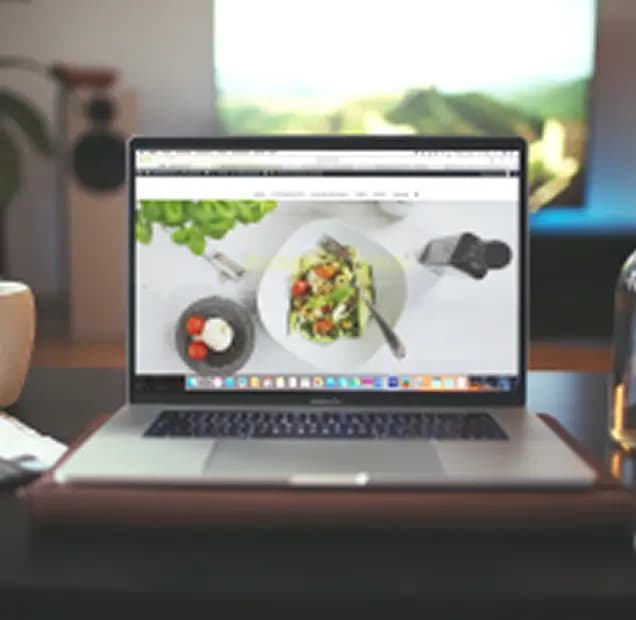
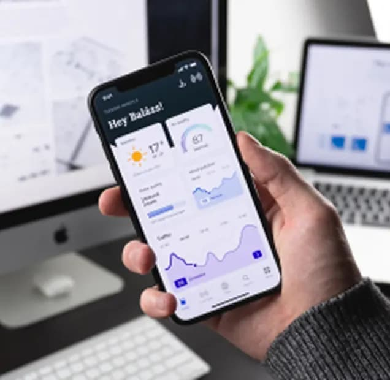
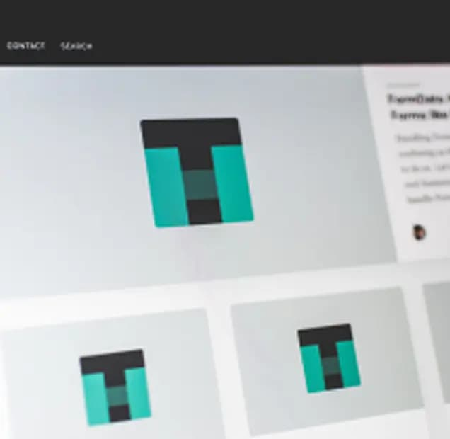

With skills in over 4 different fields of design, I am the perfect
person to hire when it comes to a full fledged project. Whatever your
needs are, I can pretty much take on any challenge.
Product Design
Working at Facebook has taught me a lot about how to understand users,
solve problems and build great products.
Visual Design
My experience at dribbble has helped me learn to develop the eye for
design. Colors, typography, layout and the whole package.
Motion Design
I started my design journey with motion design in my college days.
Motion is something that really fascinates me because of the
flexibility of story telling.
Photography
Clicking pictures really brings out the creative in me. Phtography
really makes you look and percieve things in a different way.
MY PROJECTS
Work that I’ve done for the past 8 years

Restaurant Website Design
I worked with the guys at CBRE to redesign their entire website and
mobile app fro both Android and iOS. This project lasted for 4
months and was a very challenging one.
Restaurant Website Design
I worked with the guys at CBRE to redesign their entire website and
mobile app fro both Android and iOS. This project lasted for 4
months and was a very challenging one.

Restaurant Website Design
I worked with the guys at CBRE to redesign their entire website and
mobile app fro both Android and iOS. This project lasted for 4
months and was a very challenging one.

Restaurant Website Design
I worked with the guys at CBRE to redesign their entire website and
mobile app fro both Android and iOS. This project lasted for 4
months and was a very challenging one.